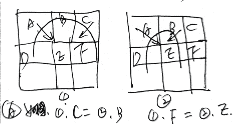
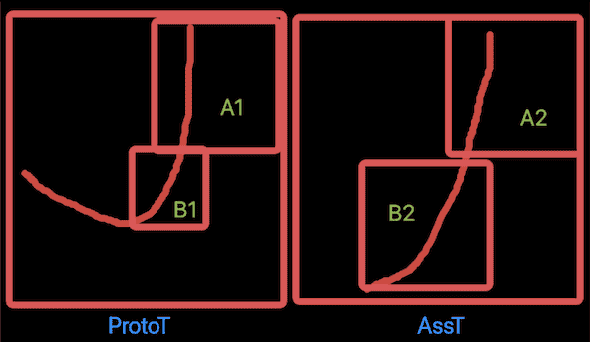
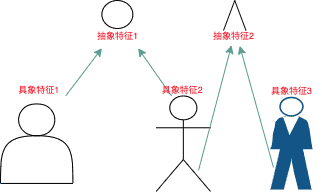

AI系列之《2025.05-07：自适应粒度与组特征自举》

来源：HELIX_THEORY/手稿/assets/758_自适应粒度_错位问题示图.png

来源：HELIX_THEORY/手稿/assets/764_比例变化时如何切粒度.png

来源：HELIX_THEORY/手稿/assets/757_局部特征到整体特征.png
来源：Note35.md
5 到 7 月围绕自适应粒度展开：开发、支持组特征、优化、废弃组特征方案、继续测试，并在 7 月将组特征识别改为自举。
自适应粒度要解决的是视觉尺度问题：太粗会丢细节，太细会爆炸。系统需要根据任务和识别结果，在合适粒度上组织特征。
组特征从支持到废弃再到自举，体现出这一阶段的探索性。自举意味着系统希望从已有识别结构中生长出更高层特征，而不是完全依赖外部标注或固定规则。